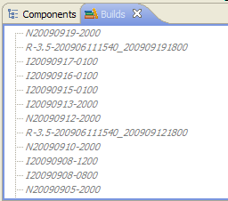
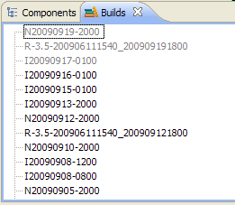
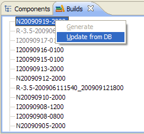
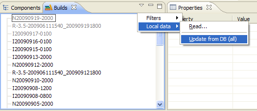
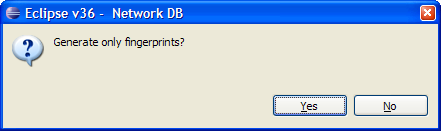
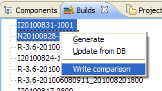

This view shows the list of all the builds contained in the connected database or in the local data files if no database is connected.
When starting the tool for the first time, this view is empty as no data has been populated, neither from the local data files nor from the performance results database.
The typical usage of the performance tools is to read local data files copied from the server (see local data). When this has been done, build names are displayed in this view using normal black color.
Some or all build names of the list may be displayed in a different font when a performance results database is connected:

In this case it's possible to update those builds using the popup-menu:
It's also possible to rewrite the local data files from the database contents in one shot using the toolbar pull-up menu:
From this view, it is also possible to generate HTML pages using the generate command accessible from the popup-menu:
After having selected the directory where to put the generated files, it's possible to choose the baseline to compare with:

And also whether you only want to generate the fingerprints or all the data:

After the generation ends, there should be in the specified directory similar files than the one generated on eclipsebuildserv.
Note that a PHP server is neeeded to be able to read these files as it's done on eclipsebuildserv or fullmoon...
From this view, it is also possible to write the comparison between two selected builds using the Write comparison item of the View menu:

The written HTML file will contain the Scenario Status Table as it would have been generated but comparing the two selected build instead of comparing a build vs a baseline.
This is helpful to see if a regression occurs after having made a change with possible impact performance...
Note that this comparison can also be shown in the Builds Comparison view...
There are several possible filters in this view.
In this view baselines filter is not activated by default. It's because it may be interesting to know which baselines have results in the DB. Note that this filter is not synchronized with the one in Components view.